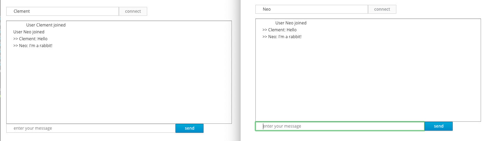

Using WebSockets
このガイドでは、QuarkusアプリケーションがWebSocketを利用してインタラクティブなウェブアプリケーションを作成する方法を説明します。 定型的な WebSocketアプリケーションなので、簡単なチャットアプリケーションを作成します。
前提条件
このガイドを完成させるには、以下が必要です:
-
less than 15 minutes
-
IDE
-
JDK 11+ installed with
JAVA_HOMEconfigured appropriately -
Apache Maven 3.6.2+
ソリューション
次の章で紹介する手順に沿って、ステップを踏んでアプリを作成することをお勧めします。ただし、すぐに完成した例に飛んでも構いません。
Gitレポジトリをクローンするか git clone https://github.com/quarkusio/quarkus-quickstarts.git 、
アーカイブ をダウンロードします。
ソリューションは websockets-quickstart
ディレクトリ にあります。
Creating the Maven project
まず、新しいプロジェクトが必要です。以下のコマンドで新規プロジェクトを作成します。
mvn io.quarkus.platform:quarkus-maven-plugin:999-SNAPSHOT:create \
-DprojectGroupId=org.acme \
-DprojectArtifactId=websockets-quickstart \
-Dextensions="websockets" \
-DnoExamples
cd websockets-quickstartこのコマンドは、Mavenプロジェクト(クラスなし)を生成し、 undertow-websockets エクステンションをインポートします。
すでにQuarkusプロジェクトが設定されている場合は、プロジェクトのベースディレクトリーで以下のコマンドを実行することで、プロジェクトに
undertow-websockets エクステンションを追加することができます。
./mvnw quarkus:add-extension -Dextensions="websockets"これにより、 pom.xml に以下が追加されます。
<dependency>
<groupId>io.quarkus</groupId>
<artifactId>quarkus-websockets</artifactId>
</dependency>
If you only want to use the WebSocket client you should include
quarkus-websockets-client instead.
|
WebSocketの取り扱い
このアプリケーションには、Web ソケットを処理するクラスが一つ含まれます。 src/main/java ディレクトリーに
org.acme.websockets.ChatSocket クラスを作成します。作成したファイルに以下の内容をコピーします。
package org.acme.websockets;
import java.util.Map;
import java.util.concurrent.ConcurrentHashMap;
import javax.enterprise.context.ApplicationScoped;
import javax.websocket.OnClose;
import javax.websocket.OnError;
import javax.websocket.OnMessage;
import javax.websocket.OnOpen;
import javax.websocket.server.PathParam;
import javax.websocket.server.ServerEndpoint;
import javax.websocket.Session;
@ServerEndpoint("/chat/{username}") (1)
@ApplicationScoped
public class ChatSocket {
Map<String, Session> sessions = new ConcurrentHashMap<>(); (2)
@OnOpen
public void onOpen(Session session, @PathParam("username") String username) {
sessions.put(username, session);
broadcast("User " + username + " joined");
}
@OnClose
public void onClose(Session session, @PathParam("username") String username) {
sessions.remove(username);
broadcast("User " + username + " left");
}
@OnError
public void onError(Session session, @PathParam("username") String username, Throwable throwable) {
sessions.remove(username);
broadcast("User " + username + " left on error: " + throwable);
}
@OnMessage
public void onMessage(String message, @PathParam("username") String username) {
broadcast(">> " + username + ": " + message);
}
private void broadcast(String message) {
sessions.values().forEach(s -> {
s.getAsyncRemote().sendObject(message, result -> {
if (result.getException() != null) {
System.out.println("Unable to send message: " + result.getException());
}
});
});
}
}-
Configures the web socket URL
-
現在開いているWebSocketを格納します。
洗練されたWebフロントエンド
すべてのチャットアプリケーションには 素敵な UIが必要です。Quarkusは、 META-INF/resources
ディレクトリーに含まれる静的リソースを自動的に提供します。 src/main/resources/META-INF/resources
ディレクトリーを作成し、この
index.html
ファイルをコピーします。
アプリケーションの実行
では、実際にアプリケーションを見てみましょう。以下のように実行してみてください:
./mvnw compile quarkus:devそして、ブラウザウィンドウを2つ開いて、 http://localhost:8080/ に移動します:
-
上部のテキストエリアに名前を入力します(2種類の名前を使用します)。
-
connectをクリック
-
メッセージの送受信

いつものように、 ./mvnw clean package を使ってアプリケーションをパッケージ化し、
target/quarkus-app/quarkus-run.jar ファイルを使って実行することができます。また、 ./mvnw package
-Pnative を使用してネイティブの実行ファイルをビルドすることもできます。
また、https://github.com/quarkusio/quarkus-quickstarts/blob/main/websockets-quickstart/src/test/java/org/acme/websockets/ChatTest.java[こちら]で詳細に解説された手法を使用して、Webソケットアプリケーションをテストすることもできます。
WebSocket Clients
Quarkus also contains a WebSocket client. You can call
ContainerProvider.getWebSocketContainer().connectToServer to create a
websocket connection. By default the quarkus-websockets artifact includes
both client and server support however if you only want the client you can
include quarkus-websockets-client instead.
サーバーに接続する際には、使用するアノテーション付きクライアント・エンドポイントの Class で渡すか、
javax.websocket.Endpoint
のインスタンスで渡すことができます。アノテーション付きエンドポイントを使用している場合は、サーバー上で使用できるのとまったく同じアノテーションを使用できますが、アノテーションは
@ServerEndpoint ではなく @ClientEndpoint でなければなりません。
以下の例は、上記のチャットエンドポイントをテストするために使用されるクライアントを示しています。
package org.acme.websockets;
import java.net.URI;
import java.util.concurrent.LinkedBlockingDeque;
import java.util.concurrent.TimeUnit;
import javax.websocket.ClientEndpoint;
import javax.websocket.ContainerProvider;
import javax.websocket.OnMessage;
import javax.websocket.OnOpen;
import javax.websocket.Session;
import org.junit.jupiter.api.Assertions;
import org.junit.jupiter.api.Test;
import io.quarkus.test.common.http.TestHTTPResource;
import io.quarkus.test.junit.QuarkusTest;
@QuarkusTest
public class ChatTest {
private static final LinkedBlockingDeque<String> MESSAGES = new LinkedBlockingDeque<>();
@TestHTTPResource("/chat/stu")
URI uri;
@Test
public void testWebsocketChat() throws Exception {
try (Session session = ContainerProvider.getWebSocketContainer().connectToServer(Client.class, uri)) {
Assertions.assertEquals("CONNECT", MESSAGES.poll(10, TimeUnit.SECONDS));
Assertions.assertEquals("User stu joined", MESSAGES.poll(10, TimeUnit.SECONDS));
session.getAsyncRemote().sendText("hello world");
Assertions.assertEquals(">> stu: hello world", MESSAGES.poll(10, TimeUnit.SECONDS));
}
}
@ClientEndpoint
public static class Client {
@OnOpen
public void open(Session session) {
MESSAGES.add("CONNECT");
// Send a message to indicate that we are ready,
// as the message handler may not be registered immediately after this callback.
session.getAsyncRemote().sendText("_ready_");
}
@OnMessage
void message(String msg) {
MESSAGES.add(msg);
}
}
}その他のWebSocket情報
Quarkus WebSocketの実装は、 Jakarta Websocket の実装です。